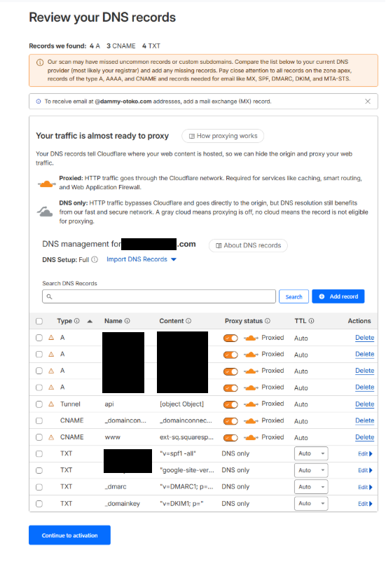
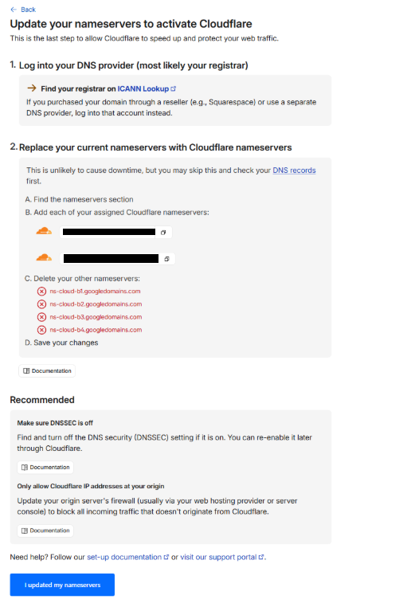
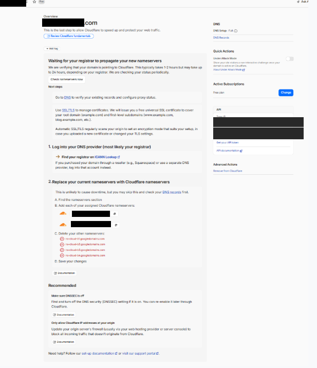
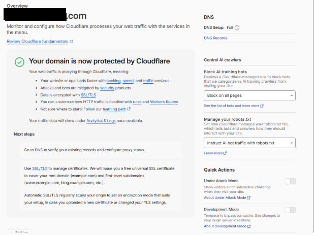

DNS 移管手順書（Squarespace → Cloudflare）
SquarespaceからCloudflareへのDNS移管手順書
本ドキュメントは、Squarespaceで取得・管理しているドメインのDNS管理をCloudflareに移行し、Cloudflare Tunnel（Named Tunnel）のPublic Hostname機能を利用可能にするための手順をまとめたものです。
1. 移管の目的と背景
Cloudflare Tunnel（Named Tunnel）でカスタムドメイン（例: api.your-domain.com）を使用するためには、Cloudflare側で「どのドメインへのリクエストをどのTunnelに流すか」というルーティング設定（Public Hostname設定）が必要です。
しかし、ドメインがCloudflare管理外（Squarespace管理など）の場合、Cloudflareのダッシュボード上でドメインを選択できず、設定が完了しません。これを解決するため、ドメインの所有権はSquarespaceに残したまま、DNSの管理権限のみをCloudflareに移行（Connect a domain）します。
ドメイン管理の5層モデルと今回の変更範囲
┌─────────────────────────────────────────────────────────────┐
│ Layer 5: アプリケーション層 │
│ 「ブラウザが api.your-domain.com を入力する」 │
├─────────────────────────────────────────────────────────────┤
│ Layer 4: DNS解決層 │
│ 「api.your-domain.com のIPアドレスは？」 │
├─────────────────────────────────────────────────────────────┤
│ Layer 3: DNS管理層（ネームサーバー） │
│ 「このドメインの案内所はここです」 │
│ ★変更前: Google Cloud DNS (ns-cloud-b1.googledomains.com) │
│ ★変更後: Cloudflare (xxxx.ns.cloudflare.com) │ ← 今回ここを変更！
├─────────────────────────────────────────────────────────────┤
│ Layer 2: ドメイン登録層（レジストラ） │
│ 「ドメインの所有権・契約管理」 │
│ ★Squarespaceのまま（変更なし） │
├─────────────────────────────────────────────────────────────┤
│ Layer 1: ルートDNS層 │
│ 「.com の管理」 │
└─────────────────────────────────────────────────────────────┘
2. 事前準備：現在のDNSレコードの確認
DNS管理を移行する際、既存のDNSレコード（ウェブサイトの表示やメールの送受信に必要な設定）が正しく引き継がれないと、サービスに影響が出ます。移行前に現在のレコードを確認します。
Windows PowerShellで以下のコマンドを実行し、現在の設定を控えておきます。
# MXレコード（メール受信）
Resolve-DnsName -Name "your-domain.com" -Type MX
# TXTレコード（SPF/DKIM等）
Resolve-DnsName -Name "your-domain.com" -Type TXT
# Aレコード（ウェブサイト）
Resolve-DnsName -Name "your-domain.com" -Type A
# CNAMEレコード（www等）
Resolve-DnsName -Name "www.your-domain.com" -Type CNAME
3. 移行手順
Step 1: Cloudflareへのサイト追加（Connect a domain）
- Cloudflareダッシュボードにログインし、左メニューから「Add a site」をクリックします。
- 3つの選択肢が表示されます。ここでは必ず 「Connect a domain」 を選択します。
- ⚠️ 注意: 「Transfer a domain」はドメインの所有権ごと移管する手続きであり、今回は使用しません。
- ドメイン名（例:
your-domain.com）を入力し、「Continue」をクリックします。
- プラン選択画面が表示されます。一番下までスクロールし、「Free」 プランを選択して「Continue」をクリックします。
Step 2: DNSレコードの自動スキャンと確認
Cloudflareが現在のDNSレコードを自動的にスキャンし、一覧を表示します。
- スキャンされたレコード一覧を確認し、事前準備で確認したレコード（A、CNAME、TXTなど）が含まれているかチェックします。
- 重要: 今回のPoCで事前に追加していた
Tunnel apiのレコード（値が[object Object]となっているもの）がある場合は、後で正しい手順で設定し直すため、この画面で 「Delete」 をクリックして削除します。 - 確認と削除が終わったら、「Continue to activation」をクリックします。

Step 3: ネームサーバー（NS）の変更
Cloudflareから、新しく設定すべき2つのネームサーバー（例: xxxx.ns.cloudflare.com, yyyy.ns.cloudflare.com）が提示されます。

- 別のブラウザタブで Squarespaceの管理画面 にログインします。
- 「Domains」→ 対象ドメイン → 「DNS Settings」または「Nameservers」を開きます。
- 「カスタムネームサーバーを使用する」 を選択し、Cloudflareから指示された2つのネームサーバーを入力して保存します。
- Cloudflareの画面に戻り、「I updated my nameservers」 をクリックします。
Step 4: 伝播の待機と完了確認
ネームサーバーの変更がインターネット全体に伝播するまで待機します（通常数分〜数時間）。

Cloudflareダッシュボードでステータスが 「Active」 に変わり、「Your domain is now protected by Cloudflare」と表示されれば、DNS移行は完了です。

4. 事後作業：Public Hostnameの設定
DNS管理がCloudflareに移ったことで、Cloudflare TunnelのPublic Hostname設定が可能になります。
- Cloudflare Zero Trustダッシュボード → 「Networks」→「Tunnels」を開きます。
- 対象のTunnel（
your-tunnel-name）を選択し、「Routes」タブ → 「Add route」→「Published application」をクリックします。 - 以下の通り設定します。
- Subdomain:api
- Domain:your-domain.com（ドロップダウンから選択可能になっています）
- Service Type:HTTP
- URL:api:8000（※エラーが出る場合はhttp://api:8000と入力） - 「Add route」をクリックして保存します。
最後に、ブラウザから https://api.your-domain.com/ping にアクセスし、意図したレスポンス（例: {"message":"pong"}）が返ってくることを確認します。
以上で手順は完了です。